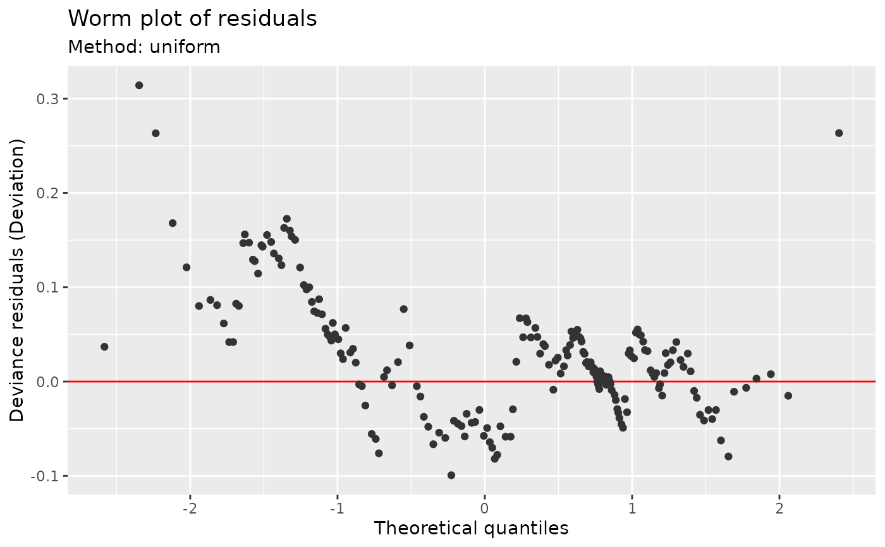
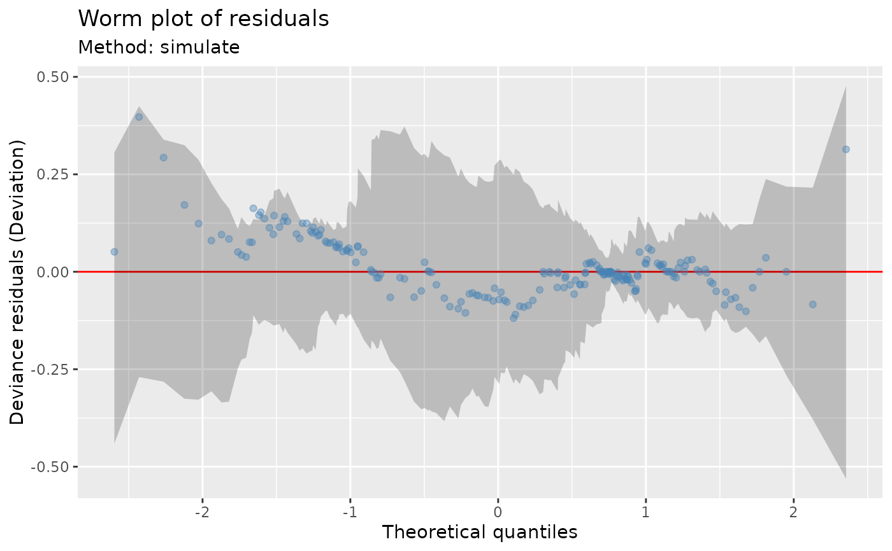
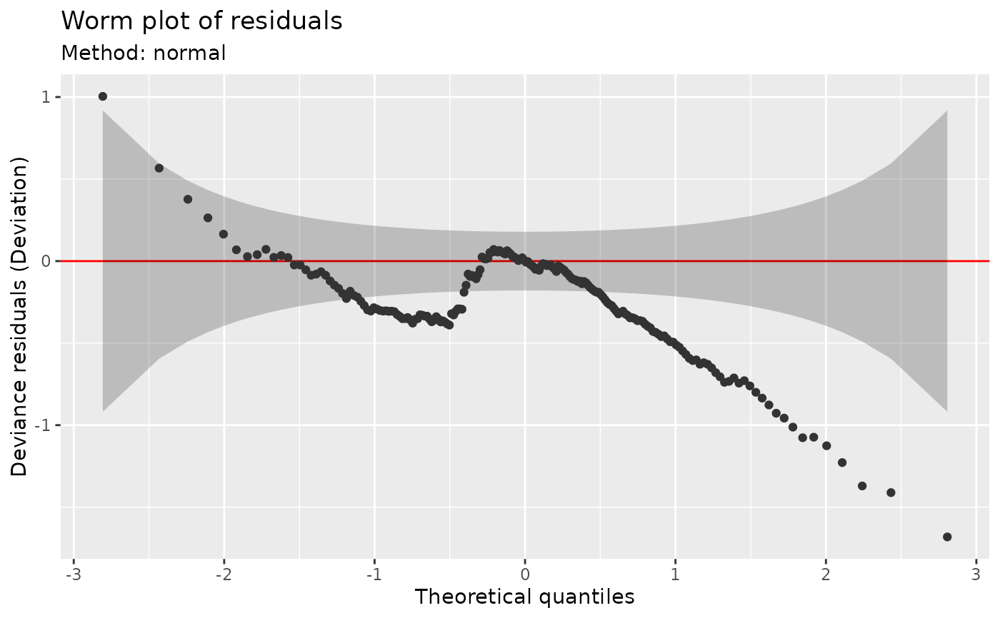

Worm plot of model residuals
Source:R/diagnostic-plots.R, R/gamm4-methods.R, R/mixed-diagnostics.R, and 2 more
worm_plot.RdWorm plot of model residuals
Usage
worm_plot(model, ...)
# S3 method for class 'gam'
worm_plot(
model,
method = NULL,
type = NULL,
n_uniform = 10,
n_simulate = 50,
level = 0.9,
ylab = NULL,
xlab = NULL,
title = NULL,
subtitle = NULL,
caption = NULL,
ci_col = "black",
ci_alpha = 0.2,
point_col = "grey20",
point_alpha = 1,
line_col = "red",
seed = NULL,
by_family = NULL,
conditioning = NULL,
...,
n_dharma = 250L
)
# S3 method for class 'glm'
worm_plot(model, ...)
# S3 method for class 'lm'
worm_plot(model, ...)
# S3 method for class 'gamm4'
worm_plot(model, conditioning = NULL, ...)
# S3 method for class 'gamm'
worm_plot(model, conditioning = NULL, ...)
# S3 method for class 'gratia_diagnostic_proxy'
worm_plot(model, type = "quantile", ...)
# S3 method for class 'lme'
worm_plot(model, conditioning = NULL, ...)
# S3 method for class 'merMod'
worm_plot(model, conditioning = NULL, ...)
# S3 method for class 'gamlss'
worm_plot(model, ..., type = "quantile", seed = NULL)
# S3 method for class 'sdmTMB'
worm_plot(
model,
conditioning = NULL,
component = "response",
field_method = c("mle-mvn", "mle-eb", "mle-mvn-integrated"),
...
)Arguments
- model
a fitted model supported by diagnostic_support.
- ...
arguments passed to other methods.
- method
character or
NULL; how to calculate reference quantiles. Probability integral transform (PIT) and quantile residuals use fixed uniform and standard-normal references, respectively. For quantile residuals,"normal"also selects that fixed reference; other named methods require traditional residuals. For deviance, response and Pearson residuals:"uniform"applies the fitted inverse cumulative distribution function (CDF) to randomised uniform quantiles and averages the resulting ordered residuals overn_uniformdraws."simulate"generatesn_simulateresponse data sets at the fitting covariates. Responses are generated together when needed to preserve dependence, and their ordered residuals supply reference values and bands."marginal"approximates the pooled distribution of individual residuals, without bands for dependence. This is selected for BAM GEE and PQL correlations that do not define a joint response distribution. Explicit joint simulation is unavailable in those cases."normal"uses a normal approximation fitted to the residual location and scale. For dependent responses it omits bands based on independence."direct"is deprecated in favour of"uniform".
For ordinary GAMs,
NULLselects"simulate"for Tweedie and"uniform"otherwise. Missing inverse CDFs cause a switch to simulation; missing response generators can cause a switch to a normal approximation for independent responses. Dependent responses use joint simulation when available, or marginal checks otherwise. For grouped families,NULLselects simulation if every component has a generator, or inverse-CDF sampling with a message if every component has an inverse CDF. If neither is available, it gives an error; a normal approximation must be requested explicitly.- type
character or
NULL; residual type:"deviance","response","pearson","pit","quantile", or"dharma".NULLuses the model-specific default: deviance for ordinary lm/glm/GAM fits, and quantile for supported grouped families, GJRM, sdmTMB and full mixed-model checks. glmmTMB uses Pearson residuals conditionally and response residuals marginally. Extracted GAM components follow the ordinary GAM defaults. See diagnostic_support.- n_uniform
numeric; number of inverse-CDF draws to average when
method = "uniform".- n_simulate
numeric; number of data sets to simulate from the estimated model when using the simulation method (
method = "simulate").- level
numeric; the coverage level for reference intervals. Must be strictly
0 < level < 1. Used for quantile reference bands and traditionalmethod = "simulate"or"normal"bands.- ylab
character or expression; the label for the y axis. If not supplied, a suitable label will be generated.
- xlab
character or expression; the label for the x axis. If not supplied, a suitable label will be generated.
- title
character or expression; the title for the plot. See
ggplot2::labs(). May be a vector, one per penalty.- subtitle
character or expression; the subtitle for the plot. See
ggplot2::labs(). May be a vector, one per penalty.- caption
character or expression; the plot caption. See
ggplot2::labs(). May be a vector, one per penalty.- ci_col
fill colour for reference intervals, including bands for quantile residuals.
- ci_alpha
alpha transparency for reference intervals.
- point_col
constant point colour when family components are not mapped to colour. Pooled grouped diagnostics instead colour points by component.
- point_alpha
alpha transparency of points on the QQ plot.
- line_col
colour used to draw the reference line.
- seed
numeric; the random number seed to use for
method = "simulate"andmethod = "uniform", and for randomised quantile residuals.- by_family
logical or
NULL; separate indexed grouped-family components into facets. The default pools quantile residuals with component colours and facets traditional residuals.TRUEandFALSEexplicitly select the layout. Inappraise(), observed-versus-fitted values always use component facets. Standaloneobserved_fitted_plot()facets by default and permits explicit pooling. Ignored for ordinary models.- conditioning
character or
NULL;"conditional"holds fitted random effects fixed,"marginal"averages over new effects, and"gam_component"uses the extracted GAM. Availability and defaults depend on the model; see diagnostic_support.- n_dharma
positive integer; number of response simulations for
type = "dharma". This is separate fromn_simulate, which controls traditional QQ reference calculations. Defaults to 250.- component
character; for delta sdmTMB models, select the complete
"response", occurrence ("binomial"), or"positive"component. Positive-component checks use only observations with positive responses.- field_method
how to treat fitted sdmTMB fields: hold one posterior draw fixed (
"mle-mvn"), hold estimates fixed ("mle-eb"), or average over fitted-field uncertainty ("mle-mvn-integrated"). Seequantile_residuals()and diagnostic_support.
Details
See appraise() for grouped-family defaults, supported distributions,
pooling and separate component panels. PIT and quantile residuals use fixed
uniform and standard-normal reference quantiles. For ideal independent
responses, bands are pointwise intervals for ordered residuals. For dependent
responses, bands use simulations that preserve dependence when available;
otherwise they are omitted. Residuals calculated from simulation ranks also
use simulated bands. See diagnostic_support for these choices and limits.
Bands condition on fitted parameters and exclude fitting uncertainty; they
do not provide simultaneous coverage. Traditional residuals use the fitted
response distributions or a normal approximation.
Subtitles name the method. Captions identify conditioning and field choices,
joint simulation bands or omitted bands. Routine pointwise bands are unlabelled.
Supply caption to replace this text, or caption = "" to omit it.
Ordinary and scalable QQ and worm plots use the same labels.
Note
The wording used in mgcv::qq.gam() uses direct in reference to the
simulated residuals method (method = "simulated"). To avoid confusion,
method = "direct" is deprecated in favour of method = "uniform".
Examples
load_mgcv()
## simulate binomial data...
dat <- data_sim("eg1", n = 200, dist = "binary", scale = .33, seed = 0)
p <- binomial()$linkinv(dat$f) # binomial p
n <- sample(c(1, 3), 200, replace = TRUE) # binomial n
dat <- transform(dat, y = rbinom(n, n, p), n = n)
m <- gam(y / n ~ s(x0) + s(x1) + s(x2) + s(x3),
family = binomial, data = dat, weights = n,
method = "REML"
)
## The default uses inverse-CDF sampling of randomised uniform quantiles.
## Note no reference bands are drawn with this method.
worm_plot(m)

## Alternatively simulate new data from the model, which
## allows construction of reference intervals for the Q-Q plot
worm_plot(m,
method = "simulate", point_col = "steelblue",
point_alpha = 0.4
)

## ... or request a normal approximation for the residuals.
worm_plot(m, method = "normal")
